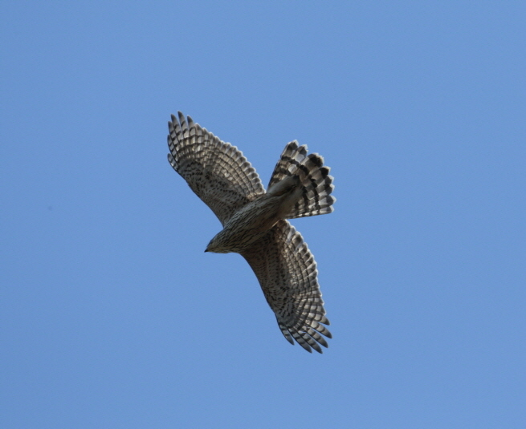

참매

주요특징 및 설명
종명: 참매(Northern Goshawk)
학명: Accipiter gentilis
생물학적 분류: 매목 수리과
분포: 북반구 및 북아메리카
등급: 멸종위기종 Ⅱ급
주요 특징
우리나라에서 예로부터 꿩 사냥에 쓰였으며, 날아가는 먹이를 노리는 것이 특징이다. 성체는 흰 눈썹선이 선명하다.
또한, 단독 또는 암수 함께 살며 겨울철에는 남쪽으로
이동하여 겨울을 나기도 한다.